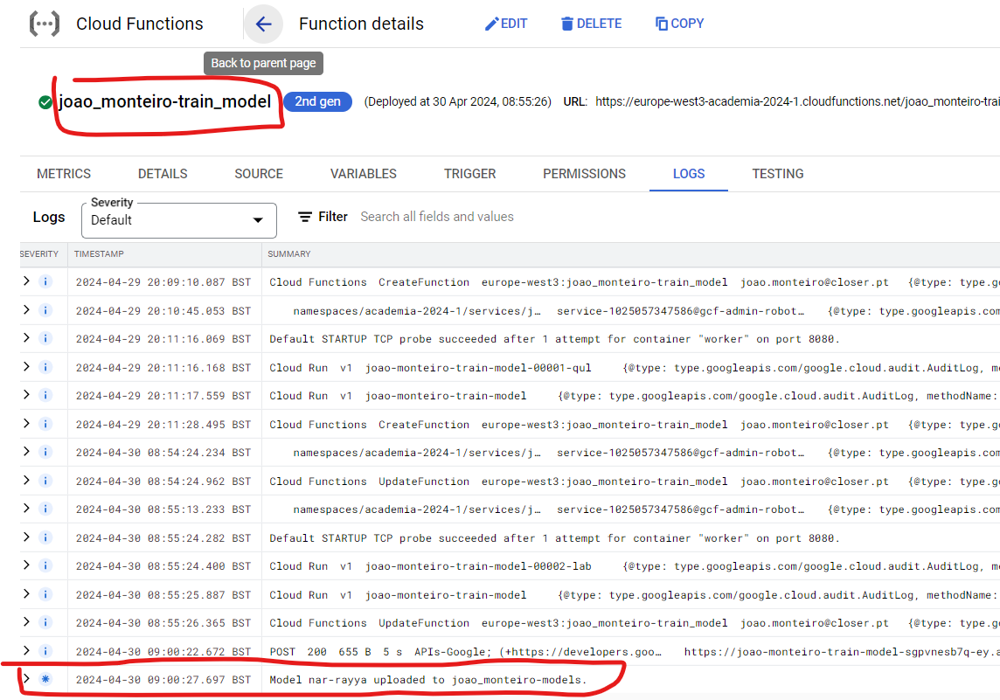

Deploy a Cloud function that trains a model and saves it in GCS¶
- Deploy a Cloud function that trains a model and saves it in GCS
- Introduction
- Tasks
- Create the Google Cloud Resources
- Update the Cloud Function Code
- Deploy the cloud function
- Confirm the model was uplodad
- Documentation
Introduction¶

In this exercise, we will create a Cloud Function called Train Model, which will be responsible for training a machine learning model using the data ingested in the previous steps. The function will be triggered by the update-facts-complete Pub/Sub topic, ensuring it starts training once new facts data is available in the BigQuery table. The steps involved in this process are as follows:
-
The
Train ModelCloud Function is subscribed to the[yourname]-update-facts-completetopic, and it will be triggered automatically when a new message is published, indicating that new data has been loaded into the BigQuery table. -
Upon being triggered, the
train_modelfunction retrieves the data from theTitanic FactsBigQuery table using the appropriate query. This data will be used to train a machine learning model, such as an Scikit-learn Random Forest or Logistic Regression model. -
After the model is trained using the fetched data, the
Train Modelfunction saves the trained model to the[yourname]-modelsGoogle Cloud Storage bucket. You can choose the name for this model, but it should be unique.
This exercise will guide you through the process of developing the train_model Cloud Function, which leverages the power of BigQuery, Scikit-learn, and Google Cloud Storage to create, train, and store a machine learning model.
For this you will need these resources:
- The already created Data Set in step 1.
- The already created Bigquery Table in step 2.
- A Pub/Sub topic named
[yourname]-train-model-completewhere you will publish a success message. - One GCS Bucket named
[yourname]-modelswhere you will save the model
The outline of the Cloud Function code is available at ./functions/simple_mlops/c_train_model/app
c_train_model/
├── app/
│ ├── funcs/
│ │ ├── models.py # Models to make typechecking easier.
│ │ ├── gcp_apis.py # Functions to call google services.
│ │ ├── common.py # Common functions (Utils).
| | └── train_model.py # Train model functions
│ ├── main.py # Main module and entry point for the Cloud Function
│ └── requirements.txt # Requirements for the function execution.
├── config/
│ └── dev.env.yaml # Environment variables that will ship with the function deployment
└── tests/
└── test_*.py # Unit tests.
Tasks¶
- Create the Google Cloud Resources
- Update the Cloud Function Code
- Test the Cloud Function
- Deploy the Cloud Function
Create the Google Cloud Resources¶
Here are the resources necessary to complete the exercise:
You can create the resources with Cloud Shell or in the Console. The end result will be the same. When creating a resource, choose either to create it with the cloud shell or the console, but not both.
For Cloud Shell, set these variables:
export PROJECT_ID=$(gcloud config get-value project)
export PROJECT_NAME=$(gcloud config get-value project)
export REGION=europe-west3
export YOURNAME=your_name_in_lowercase

1. Create the models GCS Bucket¶
Create with either Cloud Shell OR the Console UI.
With the console:
Same as in step 1, but now the bucket name is [yourname]-models
gsutil mb \
-c regional \
-l ${REGION} \
-p ${PROJECT_NAME} \
gs://${YOURNAME}-models
gsutil label ch -l owner:${YOURNAME} gs://${YOURNAME}-models
gsutil label ch -l project:${PROJECT_NAME} gs://${YOURNAME}-models
gsutil label ch -l purpose:academy gs://${YOURNAME}-models
Reference: gsutil mb, gsutil label
2. Create the pubsub topic for train model complete¶
With the Cloud Console:
Same as in step 1, but now with the name [yourname]-train-model-complete
Now we are ready to move to the cloud function code.
With Cloud Shell:
gcloud pubsub topics create ${YOURNAME}-train-model-complete \
--project=${PROJECT_ID} \
--labels=owner=${YOURNAME},project=${PROJECT_NAME},purpose=academy
Update the Cloud Function Code¶
-
Set Environment Variables
In the
c_train_model/config/dev.env.yamlfile, change the environment variables for the correct ones.############################## # 1. Environment variables ### ##############################_GCP_PROJECT_ID: "The GCP project ID where the resources are located" _GCS_BUCKET_NAME_MODELS: "The GCS bucket name where the models will be saved" _TOPIC_TRAINING_COMPLETE: "The Pub/Sub topic name where the success message will be published"
Deploy the cloud function¶
You can check the deployment here in Cloud Build
Reference: gcloud functions deploy
# Remeber to have $YOURNAME from the first export to the Cloud Shell.
# Uncomment the next lines if you see necessary
# export REGION=europe-west3
# export YOURNAME=your_name_in_lowercase
export FUNCTION_NAME="train_model"
export PATH_TO_FUNCTION="functions/mlops_usecase/c_train_model"
gcloud beta functions deploy $YOURNAME-$FUNCTION_NAME \
--gen2 --cpu=1 --memory=512MB \
--region=europe-west3 \
--runtime=python311 \
--source=${PATH_TO_FUNCTION}/app/ \
--env-vars-file=${PATH_TO_FUNCTION}/config/dev.env.yaml \
--entry-point=main \
--trigger-topic=$YOURNAME-update-facts-complete
Confirm the model was uplodad¶
Warning
Since the function is triggered by the update-facts-complete, which is activated by CF Update Facts, which is activated by the ingestion-complete topic,
you'll need to re-activate the previous ingestion function. You can achieve this by re-adding the titanic.csv.
file to the bucket. In the UI, you can upload and Overwrite File.
In the command line, you can do this with the following command:
gsutil cp resources/mlops_usecase/data/titanic.csv gs://${YOURNAME}-lz/
To verify that the model was correctly uploaded, you can 1) Check the cloud function logs, and 2) Go to your cloud storage bucket your_name_in_lowercase-models.
1. 
2.

Documentation¶
main
¶
load_clients(gcp_project_id)
¶
Load the GCP clients.
Parameters:
| Name | Type | Description | Default |
|---|---|---|---|
gcp_project_id |
str
|
The GCP project ID. |
required |
Returns:
| Name | Type | Description |
|---|---|---|
GCPClients |
GCPClients
|
A tuple of GCP clients. With the following attributes: storage_client: A storage client. bigquery_client: A bigquery client. |
Source code in functions/mlops_usecase/c_train_model/app/main.py
19 20 21 22 23 24 25 26 27 28 29 30 31 32 33 34 | |
main(cloud_event)
¶
Entrypoint of the cloud function.
Source code in functions/mlops_usecase/c_train_model/app/main.py
65 66 67 68 69 70 71 72 73 74 75 76 77 78 79 80 81 82 83 84 85 86 87 88 89 90 91 92 93 94 95 96 97 98 99 | |
train_models
¶
titanic_train(df, classifier=RandomForestClassifier(n_estimators=100, random_state=42))
¶
Train a model into a pipeline.
Parameters:
| Name | Type | Description | Default |
|---|---|---|---|
df |
Dataframe
|
The dataframe with the data to train the model. |
required |
classifier |
Callable
|
The classifier to use. Defaults to RandomForestClassifier(n_estimators=100, random_state=42). |
RandomForestClassifier(n_estimators=100, random_state=42)
|
Source code in functions/mlops_usecase/c_train_model/app/funcs/train_models.py
10 11 12 13 14 15 16 17 18 19 20 21 22 23 24 25 26 27 28 29 30 31 32 33 34 35 36 37 38 39 40 41 42 43 44 45 46 47 48 49 50 51 52 53 54 55 56 57 58 59 60 61 62 63 64 65 66 67 68 | |
common
¶
Common functions for the update_facts pipeline.
decode_base64_to_string(base64_string)
¶
Decodes a base64 string to a string.
Parameters:
| Name | Type | Description | Default |
|---|---|---|---|
base64_string |
str
|
A base64 string. |
required |
Returns:
| Name | Type | Description |
|---|---|---|
str |
str
|
The decoded string. |
Source code in functions/mlops_usecase/c_train_model/app/funcs/common.py
48 49 50 51 52 53 54 55 56 57 58 59 | |
file_contents(path)
¶
Reads the contents of a file and returns it as a string.
Parameters:
| Name | Type | Description | Default |
|---|---|---|---|
path |
Path
|
The path to the file to be read. |
required |
Returns:
| Name | Type | Description |
|---|---|---|
str |
str
|
The contents of the file as a string. |
Source code in functions/mlops_usecase/c_train_model/app/funcs/common.py
10 11 12 13 14 15 16 17 18 19 20 | |
query_train_data(table_fqn, query_path)
¶
Query to get training data from BigQuery.
This function uses the function file_contents to call the appropriate SQL query and formats it with this function parameters.
Parameters:
| Name | Type | Description | Default |
|---|---|---|---|
table_fqn |
str
|
The fully-qualified name of the table in BigQuery. |
required |
query_path |
Path
|
The path to the SQL query script. |
required |
Returns:
| Name | Type | Description |
|---|---|---|
str |
str
|
A string with the query built based on the args. |
str
|
This query can be executed later. |
Source code in functions/mlops_usecase/c_train_model/app/funcs/common.py
23 24 25 26 27 28 29 30 31 32 33 34 35 36 37 38 39 40 41 42 43 44 45 | |
gcp_apis
¶
model_save_to_storage(CS, bucket_name, model, model_name='nar-rayya', content_type='text/plain')
¶
Saves a machine learning model to Google Cloud Storage.
Parameters:
| Name | Type | Description | Default |
|---|---|---|---|
CS |
Client
|
A Google Cloud Storage client object. |
required |
bucket_name |
str
|
The name of the bucket to save the model to. |
required |
model |
Pipeline
|
The machine learning model to save. |
required |
model_name |
str
|
The name to give the saved model. Defaults to 'nar-rayya'. |
'nar-rayya'
|
content_type |
str
|
The content type of the saved model. Defaults to 'text/plain'. |
'text/plain'
|
Returns:
| Type | Description |
|---|---|
None
|
None |
Source code in functions/mlops_usecase/c_train_model/app/funcs/gcp_apis.py
39 40 41 42 43 44 45 46 47 48 49 50 51 52 53 54 55 56 57 58 59 60 61 62 63 64 65 66 67 68 69 70 | |
query_to_pandas_dataframe(query, BQ)
¶
This function takes a SQL query and a BigQuery client object as input, and returns the result of the query as a pandas DataFrame.
Parameters:
| Name | Type | Description | Default |
|---|---|---|---|
query |
str
|
The SQL query to execute. |
required |
BQ |
Client
|
The BigQuery client object to use for executing the query. |
required |
Returns:
| Type | Description |
|---|---|
DataFrame
|
pd.DataFrame: The result of the query as a pandas DataFrame. |
Source code in functions/mlops_usecase/c_train_model/app/funcs/gcp_apis.py
73 74 75 76 77 78 79 80 81 82 83 84 85 86 87 | |
models
¶
Models for the ingest_data function. Simplifies type hinting.
EnvVars
¶
Bases: NamedTuple
A named tuple representing environment variables used in the model training process.
Attributes:
| Name | Type | Description |
|---|---|---|
gcp_project_id |
str
|
The ID of the Google Cloud Platform project. |
bucket_name |
str
|
The name of the Google Cloud Storage bucket where the model artifacts will be stored. |
topic_training_complete |
str
|
The name of the Pub/Sub topic to which a message is published when training is complete. |
Source code in functions/mlops_usecase/c_train_model/app/funcs/models.py
19 20 21 22 23 24 25 26 27 28 29 | |
GCPClients
¶
Bases: NamedTuple
A named tuple that contains clients for Google Cloud Platform services.
Attributes:
| Name | Type | Description |
|---|---|---|
storage_client |
Client
|
A client for Google Cloud Storage. |
bigquery_client |
Client
|
A client for Google BigQuery. |
publisher |
PublisherClient
|
A client for Google Cloud Pub/Sub. |
Source code in functions/mlops_usecase/c_train_model/app/funcs/models.py
7 8 9 10 11 12 13 14 15 16 | |